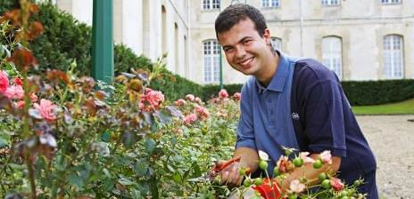
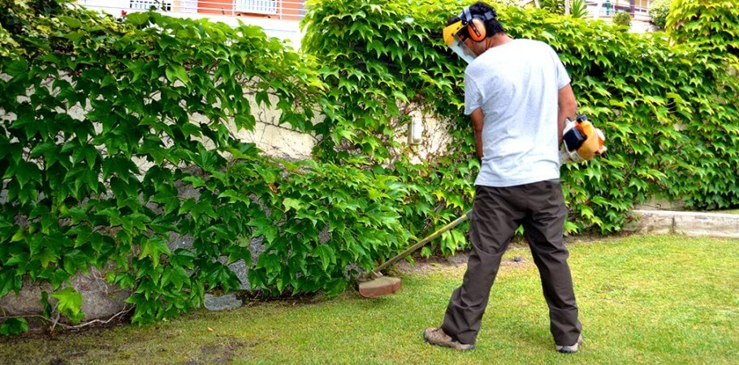
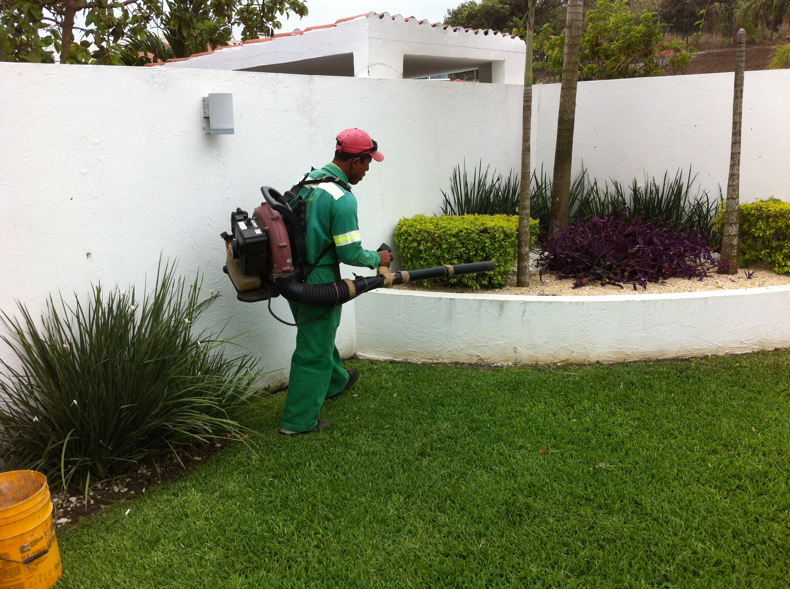

Mantenimiento

Mantenimiento integral de áreas verdes
Diseño de programas de mantenimiento de acuerdo a necesidades propias y particulares de cada zona geográfica.
Acondicionamiento de áreas verdes
Sanidad de áreas verdes

